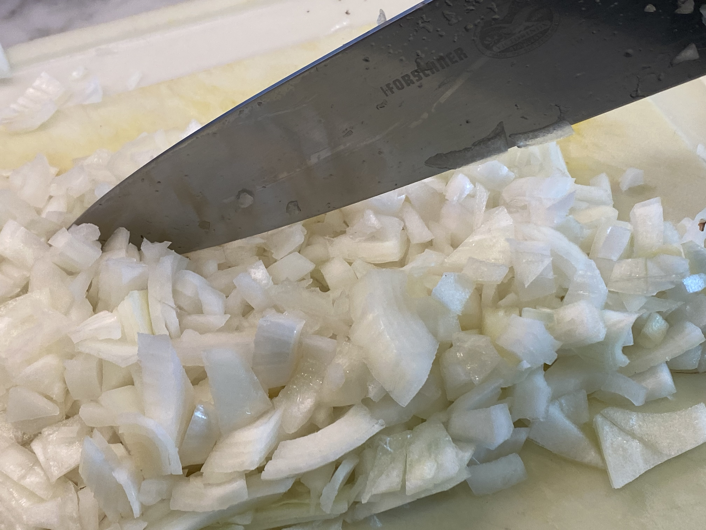
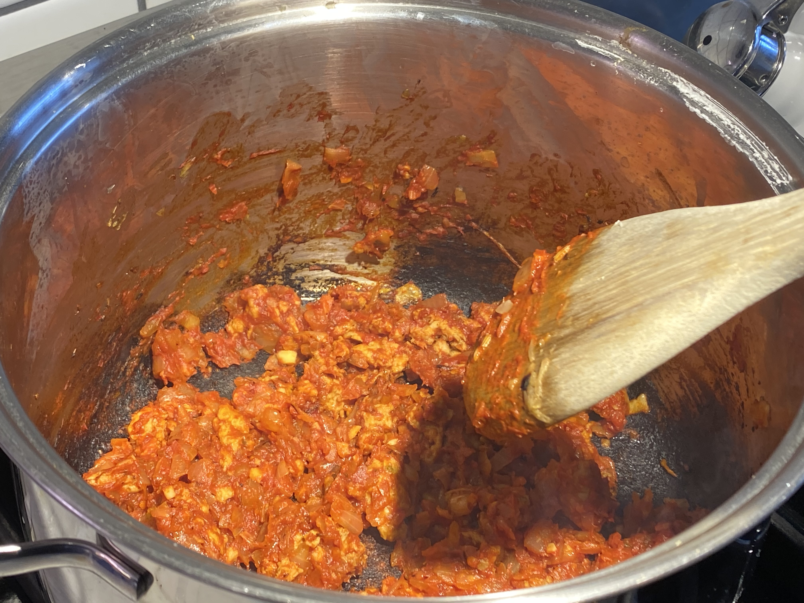
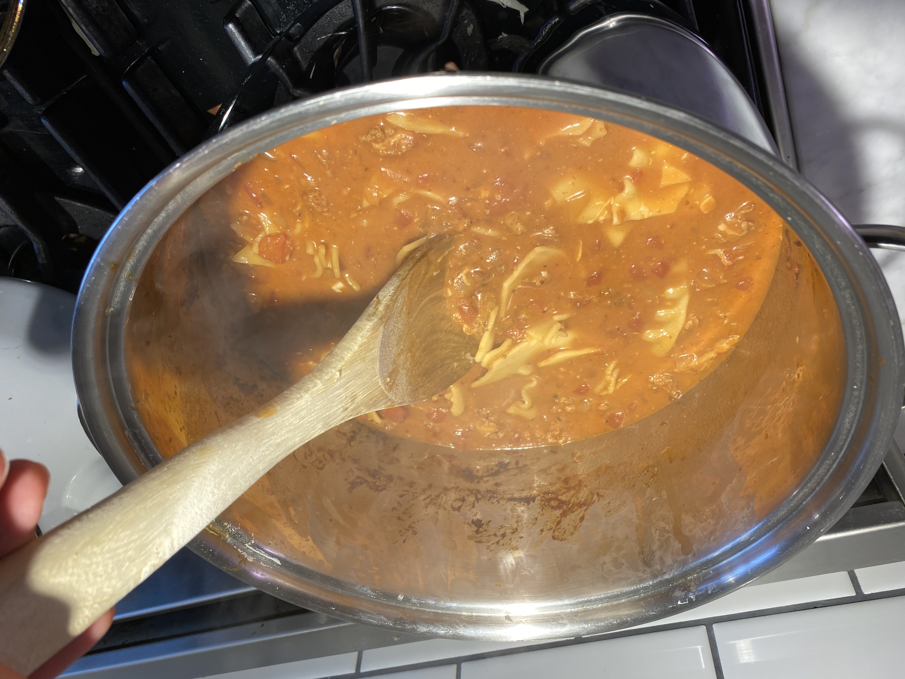
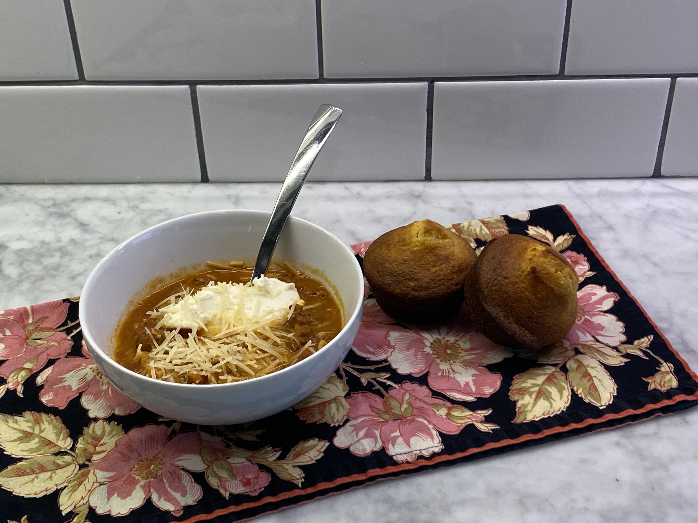

Recipe
Ingredients
Serves 4
- Kosher Salt
- 8 ounces of lasagna noodles, broken into pieces.
- 1 tbsp extra-virgin olive oil, plus more for drizzling.
- 1 onion, chopped.
- ½ pound hot or sweet Italiam sausage, casings removed.
- 3 cloves of garlic, chopped.
- 1 tsp of dried oregano.
- 2 tbsp of tomato paste.
- 4 cups low-sodium chicien broth.
- 1 15oz can of crushed or diced tomatoes.
- ½ cup of chopoed fresh basil, plus thinly sliced leaves for topping.
- ⅓ cup of grated parmesan cheese, plus more for topoing.
- ¼ cup of heavy cream or half-and-half.
- Ricotta cheese for topping.
Process
- Bring a large pot of salted water to a boil. Add the noodles and cook as the label directs. Drain; drizzle with olive oil and toss.
- Meanwhile, heat 1 tablespoon olive oil in a large Dutch oven or heavy-bottomed pot over medium-high heat. Add the onion and cook, stirring, until softened, about 4 minutes. Add the sausage, garlic and oregano and cook, stirring and breaking up the sausage with a wooden spoon, until the sausage is browned, about 3 minutes. Add the tomato paste and cook, stirring, until darkened, about 2 minutes.
- Add the chicken broth, tomatoes and 1 cup water; cover and bring to a simmer. Uncover and cook until slightly reduced, about 10 minutes. Stir in the noodles, basil, parmesan and heavy cream; simmer 2 more minutes.
- Divide the soup among bowls. Top with ricotta and sliced basil.
Based off the recipe found at foodnetwork.com. Click the link to see the original recipe.
Soup
Ingredients
All ingredients layed out, shown from the front.

Onion
Onion chopped.

Cooking Onion
Cooking the onion in the pot.

Adding Sausage
Adding sausage to the onions.

Adding Broth
Adding broth to the soup.

Display
Displayed Lasagna Soup in a bowl with Cornbread Muffins
Cornbread
Self Assesment
3 Things that Went Well:
- Chopping onion resulted better than the Stir Fry
- Followed instructions better than last time.
- Smells amazing, tasted great, and looks delicious!
3 Things that Didn't Go Well:
- Did not add basil.
- Added too much tomato paste.
- Workspace was messy during cooking.
Cleaning Score
I would give myself a 9/10. I cleaned as I went, and utilized time during cooking to cook cornbread and to finish up cleaning my workspace.